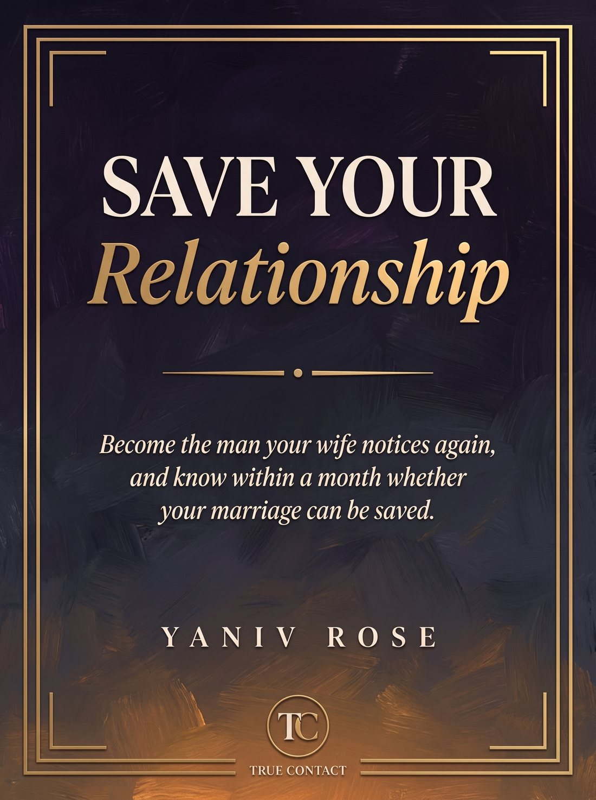

For the man who has tried everything and can feel her slipping away.
Answer straight and you'll get a clear, personal read on where your relationship really stands.
It's heading to your inbox right now. Go open it.

Your free steps cover the first few days. The full 30-Day Turnaround is the whole plan, day by day, the exact moves that close the distance and start bringing her back.